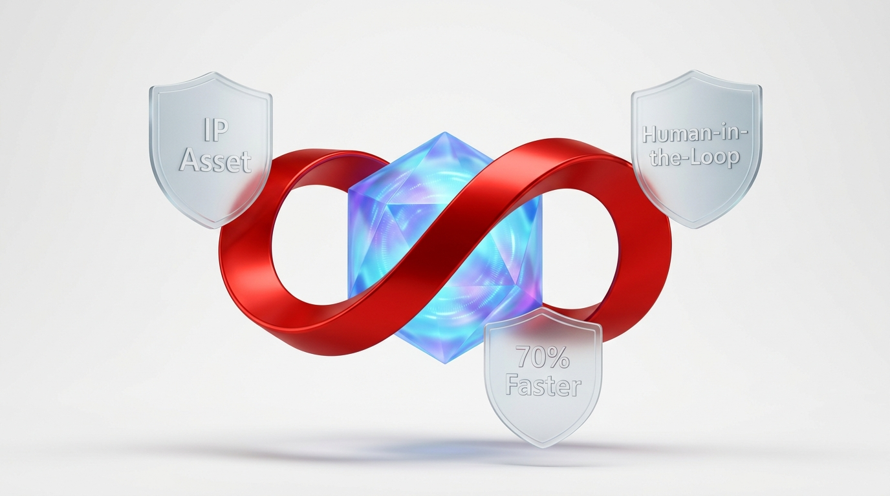

การยกระดับงานจัดซื้อเชิงกลยุทธ์: AI Vendor Selection & AI Vendor Evaluation
ปฏิวัติกระบวนการจัดซื้อและการสรรหาซัพพลายเออร์ของ Microsoft Dynamics 365 Supply Chain Management (SCM) จากการตัดสินใจบน "ราคาต่ำสุดในอดีต (Lowest Unit Price)" สู่การตัดสินใจบน "ต้นทุนรวมที่แท้จริง (True Total Cost of Ownership - TCO)" และการประเมินความเสี่ยงคู่ค้าแบบ 360 องศาด้วย Generative AI และ Cognitive Analytics

ประหยัดต้นทุนรวม TCO ที่แท้จริง
ลดเวลาเทียบใบเสนอราคาเหลือ 10 วิ
ตรวจจับสถานะการเงิน & ข่าวลบ
กระจายยอดซื้อคู่ค้าสำรองอัจฉริยะ
ระบบ D365 Standard ในปัจจุบันยังขาดระบบปัญญาประดิษฐ์เชิงคาดการณ์ในการจัดซื้อ การประเมินคู่ค้าทำได้เพียงดูคะแนนย้อนหลัง และการเทียบใบเสนอราคายังต้องใช้มนุษย์กรอกตารางทีละบรรทัด โซลูชัน Fujitsu Procurement Intelligence จะช่วยให้ผู้บริหารจัดซื้อ (CPO/CFO) มีผู้ช่วย AI อัจฉริยะในการวิเคราะห์ข้อเสนอหลายเจ้าพร้อมกัน คำนวณ TCO ที่รวมค่าของเสียและความเสี่ยงดีเลย์ พร้อมทั้งประเมิน ESG และเครดิตคู่ค้าเชิงรุก
ในระบบ ERP ดั้งเดิม การจัดซื้อมักติดอยู่กับกระบวนการทำงานที่ล่าช้าและมุมมองที่จำกัด ตารางด้านล่างแสดงให้เห็นถึงความแตกต่างระหว่างระบบมาตรฐาน D365 กับสถาปัตยกรรมใหม่ของ Fujitsu ที่ผสานพลังของ Azure OpenAI & Copilot Studio:
| มิติการจัดซื้อ (Dimension) | D365 SCM Standard (ปัจจุบัน) | Fujitsu AI Procurement Intelligence |
|---|---|---|
| 1. การประเมินคู่ค้า (Evaluation) | ย้อนหลัง (Lagging): บันทึกคะแนน OTIF และของเสียหลังจากเหตุการณ์เกิดขึ้นแล้วเป็นตารางสถิติ | เชิงคาดการณ์ 360° (Predictive): ผสานประวัติใน ERP เข้ากับข่าวด้านลบ, ความเสี่ยงทางการเงิน, และพฤติกรรมการตอบกลับ |
| 2. การเปรียบเทียบใบเสนอราคา (RFQ) | ใช้แรงงานคน (Manual): เจ้าหน้าที่ต้องเปิดไฟล์ PDF ทีละเจ้า แล้วคีย์ราคาและเงื่อนไขลงตาราง Excel หรือ D365 | สกัดข้อมูลอัตโนมัติ (Multi-Quote AI): อ่าน PDF 3–5 ซัพพลายเออร์พร้อมกัน สรุปตารางเปรียบเทียบใน 10 วินาที |
| 3. เกณฑ์การคัดเลือก (Selection Logic) | ราคาต่อหน่วย (Unit Price Bias): มักเลือกเจ้าที่ราคาหน้าบิลต่ำสุดโดยไม่คำนวณต้นทุนแฝง | ต้นทุนรวมที่แท้จริง (True TCO): คำนวณราคา + ค่าขนส่ง + อัตราของเสียคาดการณ์ + ค่าความเสี่ยงไลน์ผลิตหยุด |
| 4. กลยุทธ์การสั่งซื้อ (Awarding Strategy) | สั่งเจ้าเดียว 100% (Single Source): เสี่ยงไลน์หยุดหากคู่ค้ารายนั้นส่งของไม่ทัน | แนะนำแบ่งยอดซื้อ (Optimal Split-Award): แนะนำสัดส่วน (เช่น 70/30) เพื่อกระจายความเสี่ยงและเลี้ยง Volume คู่ค้า |
| 5. การตรวจสอบ ESG & มาตรฐาน | เอกสารกระดาษ (Static Attachments): แนบไฟล์ใบรับรอง ISO ไว้ในระบบโดยไม่มีการตรวจสอบวันหมดอายุเชิงรุก | ตรวจสอบแบบเรียลไทม์ (Continuous Audit): ตรวจเกณฑ์คาร์บอนฟุตพริ้นท์ (CBAM), กฎหมายแรงงาน และใบรับรองอัตโนมัติ |
D365 PurchTable/Line • PDF RFQ Bids • External News Feeds • Supplier Financial Data
Azure OpenAI • TCO Mathematical Formula • ESG Rule Matching • Risk Sentiment Score
Auto Draft Purchase Orders • Split PO Lines • Human-in-the-Loop Sign-off • Counter-Offer Email
เปลี่ยนจากการตัดเกรดคู่ค้าย้อนหลังปีละครั้ง สู่ "Dynamic Predictive Scorecard" ที่อัปเดตแบบ Real-time ผ่านการประมวลผล 4 มิติสำคัญ:
วิเคราะห์ข้อมูลธุรกรรมจริงใน D365 SCM:
สแกนสัญญาณความเสี่ยงภายนอกแบบ 24/7:
ตรวจสอบมาตรฐานความยั่งยืนระดับสากล:
วิเคราะห์พฤติกรรมการสื่อสารผ่านอีเมล:
"แจ้งเตือน: ซัพพลายเออร์ Apex Polymer (รหัส V-102) แม้จะมีราคาเสนอต่ำที่สุด แต่เกรดรวมในระบบถูกปรับลดจาก A → C+ เนื่องจาก 60 วันที่ผ่านมา ตรวจพบอัตราของเสียจากเรซินเพิ่มขึ้น 6.8% ในไลน์ฉีดพลาสติก และระบบสแกนพบข่าวท้องถิ่นว่าบริษัทแม่กำลังประสบปัญหาขาดสภาพคล่องทางการเงิน แนะนำให้ระงับการต่อสัญญาผูกขาด 100% ในรอบนี้"
เมื่อจัดซื้อได้รับใบเสนอราคาจากซัพพลายเออร์หลายราย Copilot จะทำหน้าที่เป็น "Chief Procurement Analyst" ในการวิเคราะห์เปรียบเทียบและเสนอทางเลือกที่ดีที่สุด:
ผู้ใช้วางไฟล์ PDF ใบเสนอราคาจาก 3–5 ซัพพลายเออร์ลงใน Copilot ระบบจะสกัดข้อมูล: ราคาต่อหน่วย, ตารางส่วนลดตาม Volume, Incoterms, เครดิตเทอม และวันส่งมอบ แปลงเป็นหน่วยมาตรฐานเดียวกันและสร้างตารางเปรียบเทียบเทียบเคียงให้อัตโนมัติใน 10 วินาที
แทนที่จะมองแค่ราคาหน้าบิล Copilot จะคำนวณต้นทุนแฝงรอบด้านผ่านสูตรคณิตศาสตร์:
*กรณีศึกษาจริง: ซัพพลายเออร์ A เสนอชิ้นละ 100 บาท (แต่มีของเสีย 5%), ซัพพลายเออร์ B เสนอ 103 บาท (ของเสีย 0.2% ส่งตรงเวลา 100%) Copilot จะคำนวณพบว่าซัพพลายเออร์ B มีต้นทุนจริงต่ำกว่าถึง 4.2 บาทต่อชิ้น!
Copilot จะแนะนำสัดส่วนการแบ่งคำสั่งซื้อ (Split PO) ที่เหมาะสมที่สุดเพื่อไม่ให้องค์กรตกอยู่ในภาวะผูกขาด: "แนะนำสั่งซื้อแบบแบ่งยอด: 70% ให้ซัพพลายเออร์ B (เพื่อต้นทุน TCO ต่ำสุด) และ 30% ให้ซัพพลายเออร์ C (เพื่อรักษาโควตาสัญญาและสำรองความเสี่ยง)"
Copilot มีหน้าที่วิเคราะห์และสร้าง "ใบข้อเสนอแนะพร้อมเหตุผล (Awarding Recommendation Memo)" และร่าง Purchase Order ใน D365 โดย ไม่มีการอนุมัติคำสั่งซื้อโดยพลการ เจ้าหน้าที่จัดซื้อและผู้บริหารจะเป็นผู้กดอนุมัติ (Sign-off) เสมอ ทำให้ถูกต้องตามนโยบายควบคุมภายใน (Internal Audit) 100%
ประหยัดงบจัดซื้อผ่านการคำนวณ TCO และกำจัดของเสีย
ย่นระยะเวลาการเทียบราคาและเปิด PO ได้เร็วขึ้น
มีบันทึกเหตุผลการเลือกคู่ค้าพร้อมตรวจ Auditor
เชื่อมต่อ D365 PurchTable/VendTable และเทรน AI อ่าน PDF ใบเสนอราคา (RFQ)
คอนฟิกสูตรคำนวณ TCO และสร้างโมเดลประเมินคะแนน Predictive Scorecard 360°
เชื่อมต่อ Copilot Studio เข้ากับระบบเปิด PO ใน D365 และทดสอบ Split-Awarding
ทดสอบ UAT ร่วมกับทีมจัดซื้อ, วัดผลประหยัดต้นทุนจริง และเปิดใช้งานบน Production
องค์กรข้ามชาติและกลุ่มทุนโรงงานญี่ปุ่น (Japanese Conglomerates) ในไทย ให้ความสำคัญสูงสุดกับ ความโปร่งใสและเสถียรภาพของคู่ค้า (Supplier Stability & Governance) การที่ FTH สามารถนำเสนอโซลูชัน Procurement Intelligence ที่มีทั้ง AI อ่านบิล, คำนวณ TCO และตรวจสอบ ESG ล่วงหน้า จะทำให้ FTH ก้าวล้ำกว่าคู่แข่งที่ขายเพียงระบบ ERP พื้นฐาน และยกระดับเป็น Strategic Digital Transformation Partner ที่สร้างมูลค่าเพิ่มมหาศาลครับ